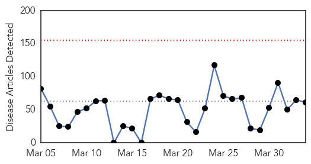
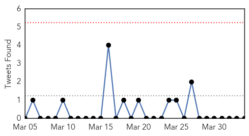
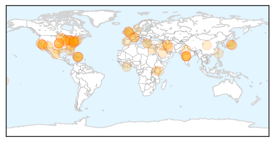
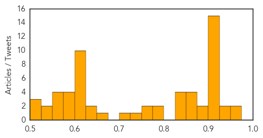

Bubonic Plague
30-Day Web Trend
0 alerts, 0 warnings

30-Day Twitter Trend
0 alerts, 0 warnings

Article Locations

Article Confidences

Top Articles:
-
No articles found for Apr 03, 2015
Top Tweets:
-
No tweets found for Apr 03, 2015
Unknown
30-Day Web Trend
0 alerts, 0 warnings

30-Day Twitter Trend
0 alerts, 0 warnings

Article Locations
Article Confidences
Top Articles:
- 0.958
- Drug resistant strain of Shigellosis spreading rapidly in United States: CDC
- 0.957
- Drug-resistant strain of infectious illness hits U.S.
- 0.945
- Shigella Sonnei Bacteria Emerging as New "Superbug" CDC Warns
- 0.940
- Diarrhea Inducing Bacteria Is Now Drug Resistant, CDC Says
- 0.921
- CDC Warns Of Potential Drug Resistant Shigellosis Outbreak
- 0.917
- Chicago Tribune
- 0.917
- Chicago Tribune
- 0.917
- Chicago Tribune
- 0.917
- Chicago Tribune
- 0.917
- Chicago Tribune
- 0.917
- Chicago Tribune
- 0.917
- Chicago Tribune
- 0.917
- Chicago Tribune
- 0.917
- Chicago Tribune
- 0.917
- Chicago Tribune
- 0.917
- Chicago Tribune
- 0.917
- Chicago Tribune
- 0.917
- Chicago Tribune
- 0.904
- Radical Vaccine Design Effective Against Herpes Viruses
- 0.889
- Drug-Resistant Shigella Pops in US
- 0.885
- Imported drug-resistant stomach bug spreading in U.S.
- 0.873
- Imported drug-resistant stomach bug spreading in US
- 0.869
- CDC: Uptick in drug-resistant stomach bug in last year
- 0.864
- Plague-infected fleas show up in Picture Canyon
- 0.855
- Hidden enemy: Emerging form of poliovirus threatens hopes for eradication
- 0.844
- CDC cautions against drug resistant Shigellosis outbreak
- 0.841
- Cowlitz County gonorrhea rate on the rise
- 0.831
- Bird flu hits biggest Minnesota turkey farm so far
- 0.825
- White House Declares War on Three Antibiotic-Resistant ‘Superbugs’
- 0.777
- Shigella: What to Know About America's New Drug-Resistant Bug
- 0.777
- Shigella: What to Know About America's New Drug-Resistant Bug
- 0.756
- Outbreak at Bloomingdale High School in Florida
- 0.750
- Shigella Stomach Bug Develops Drug Resistance and Causes Outbreak
- 0.730
- CDC Steps In as Drug Resistant Shigella Outbreak Accelerates
- 0.719
- Scabies Outbreak in Texas Middle School
- 0.663
- 2011 Outbreak of Rare E. Coli Strain was Costly for Europe
- 0.637
- Bane of sheep and goat farmers targeted for eradication
- 0.632
- Drug Resistant Shigellosis Outbreak In US, Says CDC
- 0.618
- Higher levels of diseases caused by contaminated food than reported
- 0.610
- Yemen's Houthis pull back from central Aden
- 0.610
- Second black box confirms Germanwings crash was deliberate
- 0.610
- Paris supermarket hostages sue French media over live coverage
- 0.610
- No clear winner in UK’s election TV debate
- 0.610
- Two New York women accused of plotting terror attack
- 0.610
- Why Kenya can’t contain the al Shabaab threat
- 0.610
- Al Shabaab 'carefully planned' Kenya university massacre
- 0.610
- Iraqi PM orders arrest of looters in Tikrit
- 0.605
- Health Precautions Advised During Sandstorms
- 0.599
- What China Can Teach The World About Successful Health Care
- 0.592
- A doctor with heart targets Rheumatic Heart Disease
Showing top 50 articles...
Top Tweets:
-
No tweets found for Apr 03, 2015